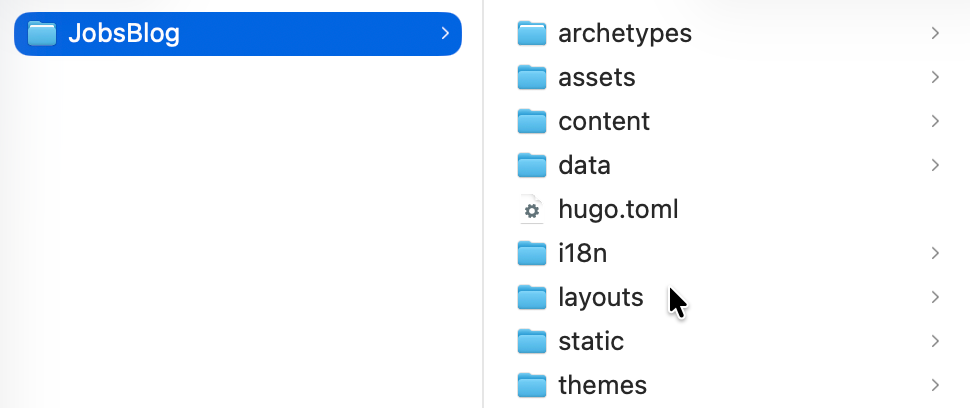
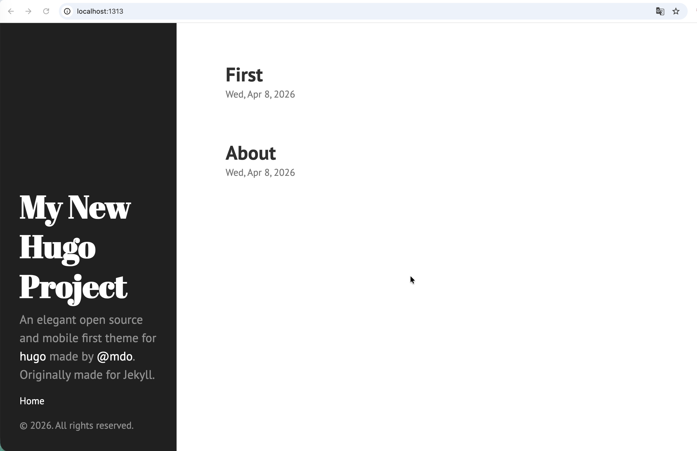

一、核心特点#
没有后端、没有数据库、速度极快
flowchart LR
A[编写内容<br/>Markdown] --> B[Hugo 读取内容]
B --> C[套用主题<br/>Theme / 模板]
C --> D[生成静态站点<br/>HTML CSS JS]
D --> E[发布部署<br/>GitHub Pages / CDN / 服务器]
E --> F[用户访问网站]1、环境配置#
-
推荐终端：Oh-My-Zsh
sh -c "$(curl -fsSL https://raw.githubusercontent.com/ohmyzsh/ohmyzsh/master/tools/install.sh)" -
/bin/bash -c "$(curl -fsSL https://raw.githubusercontent.com/Homebrew/install/HEAD/install.sh)"
2、安装配置#
3、生成站点#
-
hugo new site JobsBlogLast login: Wed Apr 8 10:28:06 on ttys000 ➜ Desktop hugo new site JobsBlog Congratulations! Your new Hugo project was created in /Users/jobs/Desktop/JobsBlog. Just a few more steps... 1. Change the current directory to /Users/jobs/Desktop/JobsBlog. 2. Create or install a theme: - Create a new theme with the command "hugo new theme <THEMENAME>" - Or, install a theme from https://themes.gohugo.io/ 3. Edit hugo.toml, setting the "theme" property to the theme name. 4. Create new content with the command "hugo new content <SECTIONNAME>/<FILENAME>.<FORMAT>". 5. Start the embedded web server with the command "hugo server --buildDrafts". See documentation at https://gohugo.io/. -
目录结构
JobsBlog/ ├── content/ # 文章 ├── themes/ # 主题 ├── static/ # 静态资源 ├── config.toml # 配置
3.2、创建一些页面资源#
-
创建文章页面
hugo new about.md -
创建第一篇文章，放到
post目录，方便之后生成聚合页面hugo new post/first.md
3.3、安装皮肤#
-
进入
themes文件夹git clone https://github.com/spf13/hyde.git
4、运行Hugo#
4.1、本地运行#

-
跳出
themes文件目录，并且回到Test_Hugo目录，执行命令：hugo server --theme=hyde --buildDraftsLast login: Wed Apr 8 10:48:22 on ttys000 ➜ Desktop /Users/jobs/Desktop/JobsBlog ➜ JobsBlog hugo server --theme=hyde --buildDrafts Watching for changes in /Users/jobs/Desktop/JobsBlog/archetypes, /Users/jobs/Desktop/JobsBlog/assets, /Users/jobs/Desktop/JobsBlog/content/post, /Users/jobs/Desktop/JobsBlog/data, /Users/jobs/Desktop/JobsBlog/i18n, /Users/jobs/Desktop/JobsBlog/layouts, /Users/jobs/Desktop/JobsBlog/static, /Users/jobs/Desktop/JobsBlog/themes/hyde/archetypes, /Users/jobs/Desktop/JobsBlog/themes/hyde/assets/css, /Users/jobs/Desktop/JobsBlog/themes/hyde/layouts/{_default,partials}, ... and 1 more Watching for config changes in /Users/jobs/Desktop/JobsBlog/hugo.toml Start building sites … hugo v0.160.0+extended+withdeploy darwin/arm64 BuildDate=2026-04-04T13:32:34Z VendorInfo=Homebrew │ EN ──────────────────┼──── Pages │ 12 Paginator pages │ 0 Non-page files │ 0 Static files │ 2 Processed images │ 0 Aliases │ 0 Cleaned │ 0 Built in 2 ms Environment: "development" Serving pages from disk Running in Fast Render Mode. For full rebuilds on change: hugo server --disableFastRender Web Server is available at http://localhost:1313/ (bind address 127.0.0.1) Press Ctrl+C to stop -
此时，页面服务（监听默认端口1313）已经开启，可以在浏览器里面进行访问
注意：只要关闭Mac终端或者Ctrl+C，都会结束掉页面服务，导致 http://localhost:1313 无法打开
http://localhost:1313
4.2、发布到GitHub#
-
首先在GitHub上创建一个代码仓库，命名为：
Jobs.github.io -
回到此项目的根目录，运行 ➤
hugo --theme=hyde --baseURL="http://coderzh.github.io/"➜ JobsBlog git:(main) ✗ hugo --theme=hyde --baseURL="http://coderzh.github.io/" Start building sites … hugo v0.160.0+extended+withdeploy darwin/arm64 BuildDate=2026-04-04T13:32:34Z VendorInfo=Homebrew │ EN ──────────────────┼──── Pages │ 10 Paginator pages │ 0 Non-page files │ 0 Static files │ 2 Processed images │ 0 Aliases │ 0 Cleaned │ 0 Total in 10 ms ➜ JobsBlog git:(main) ✗ -
在该项目文件夹下面 ➤ Setting （上方标签） ➤ Code and automation（左侧边栏） ➤ Pages（原GitHub Pages）
-
创建并启动工作流 。上传到GitHub后会被自动识别
在项目根目录下新建
.github/workflows/deploy.yamlname: Deploy Hugo site to Pages on: push: branches: - main workflow_dispatch: permissions: contents: read pages: write id-token: write concurrency: group: pages cancel-in-progress: true jobs: build: runs-on: ubuntu-latest env: HUGO_VERSION: 0.145.0 steps: - name: Checkout uses: actions/checkout@v4 with: fetch-depth: 0 - name: Setup Pages id: pages uses: actions/configure-pages@v5 - name: Setup Hugo uses: peaceiris/actions-hugo@v3 with: hugo-version: ${{ env.HUGO_VERSION }} extended: true - name: Build with Hugo run: hugo --minify --baseURL "${{ steps.pages.outputs.base_url }}/" - name: Upload artifact uses: actions/upload-pages-artifact@v3 with: path: ./public deploy: needs: build runs-on: ubuntu-latest environment: name: github-pages url: ${{ steps.deployment.outputs.page_url }} steps: - name: Deploy to GitHub Pages id: deployment uses: actions/deploy-pages@v4
可能需要等待几分钟，这个时候访问浏览器：https://jobskits.github.io/ 🍺成功🍺